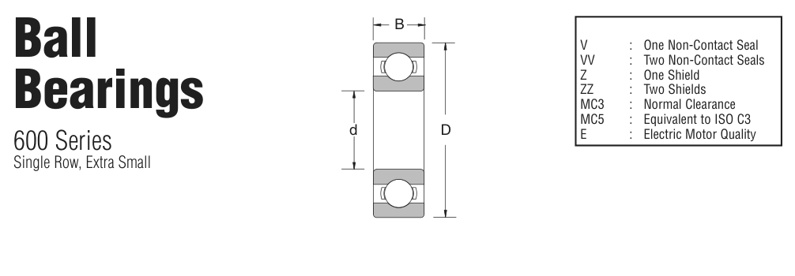

Original catalogue drawing - NSK catalogue, page 13

Scanned from the manufacturer catalogue page listing this part number. All part numbers printed on that table share the same drawing.
Scale cross-section
Blue = inner / outer ring, yellow = rolling element. Drawn to scale from this part's own
dimensions for selection reference only - not a manufacturing or assembly drawing.
Dimension table (mm / inch)
Symbol
Dimension
mm
inch
d
Bore diameter
3
0.1181
D
Outside diameter
8
0.315
B
Inner-ring / bearing width
4
0.1575
r
Chamfer (min)
0.152
0.006
Notes
Weights are given in kg. Load ratings are shown in both the original catalogue units and the converted value (1 N = 0.2248 lbf). Data is provided for selection reference only - confirm against the latest official catalogue before ordering.
Main dimensions
Bore d (mm)
3.00
Bore d (in)
0.1181
Outside dia. D (mm)
8
Outside dia. D (in)
0.3150
Width B (mm)
4.00
Width B (in)
0.1575
Load ratings & speeds
Basic dynamic load rating Cr (lbs)
126
Basic static load rating Cor (lbs)
40
Limiting speed - grease (rpm)
60,000
Limiting speed - oil (rpm)
67,000
Weight
Weight (kg)
0.00091
Mounting dimensions (fillets / shoulders)
Chamfer r (in)
0.006
Shaft shoulder (in)
0.165
Housing shoulder (in)
0.268
Bearing life (ISO 281 basic rating life)
C / P
Equivalent load P (N)
L10 (106 rev)
L10h at 3,000 rpm
4
140
64
356
6
93
216
1,200
8
70
512
2,844
10
56
1,000
5,556
15
37
3,375
18,750
Basic rating life per ISO 281: L10 = (C/P)3 with C = 560 N. Hours = L10 x 106 / (60n). Life-modification factors for lubrication, contamination and temperature (aISO) are not included.
Source & traceability
Brand
NSK
Source catalogue
NSK inch product catalogue
Catalogue page
p.16 (dimensions) / p.16 (ratings)
Dimensions in inches and millimetres, load ratings in lbs.
Send us the quantity you need and we will come back with price and
lead time, normally within 24 hours. Equivalent parts from other brands can be quoted at the same time.